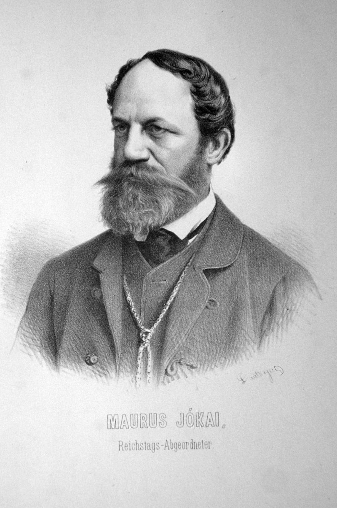

|

A komáromi születésű Ásvai Jókay Móric1, közismertebb nevén Jókai Mór a márciusi ifjak egyike, regényíró, a „nagy magyar mesemondó”, országgyűlési képviselő, főrendiházi tag,
a Magyar Tudományos Akadémia igazgató-tanácsának tagja, a Szent István-rendlovagja, a Kisfaludy Társaság tagja, 1876-tól 1903-ig a Petőfi Társaság elnöke, a Dugonics Társaság tiszteletbeli tagja. Jókay Károly és Jókai Eszter öccse.
A legnépszerűbb magyar regényíró hatvan esztendőre terjedő pályáját mindvégig lankadatlan érdeklődés kísérte. Mesekitalálásának kiapadhatatlanságával és képzeletének gazdagságával éppen olyan nagy hatást tett, mint stílusának elevenségével és humorának kedvességével.
1Jókay Móricz néven anyakönyvezték. Egy anekdota szerint írótársa, Tóth Lőrinc címzett először egy levelet „Jókay Mór úrnak”, amin Jókai kezdetben bosszankodott, s frappáns válaszul ő maga is „Tóth Lőr úrnak” címezte leveleit.
Később Petőfi unszolására kezdte az irodalmi életben a Jókay Mór nevet használni. 1848. március 15. után nevében az y-t i-re cserélte, ezzel is jelezve, hogy nem akar élni a nemesi származás előnyeivel, így legismertebb regényei már Jókai Mór néven jelentek meg.
|